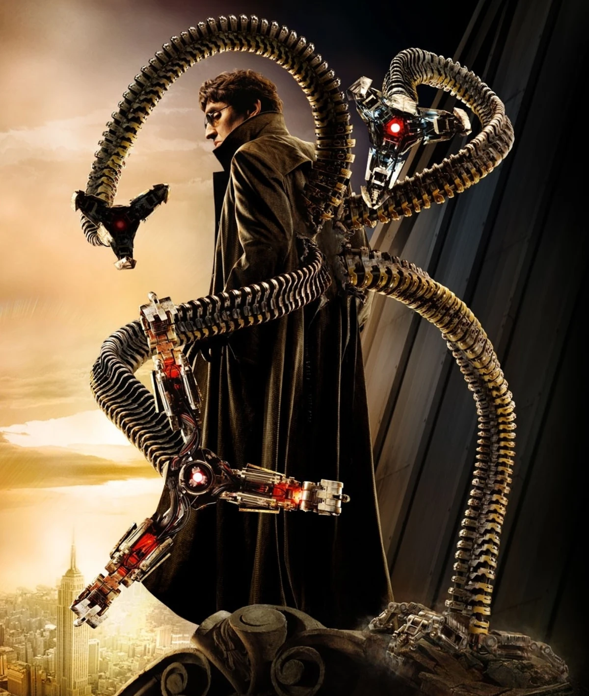

Who Is Spider-Man?
Spider-Man is a popular superhero who is usually portrayed as Peter Parker. After being bitten by a radioactive spider, Peter develops special abilities. He uses his powers to protect people and fight criminals.
Spider-Man is known for combining physical abilities with intelligence and creativity. His spider-sense helps him detect danger, while his web-shooters allow him to swing between buildings and capture enemies.
Spider-Man's Abilities
- Superhuman strength
- Wall-crawling ability
- Spider-sense
- Web-swinging and web-shooting
Character Image Gallery


